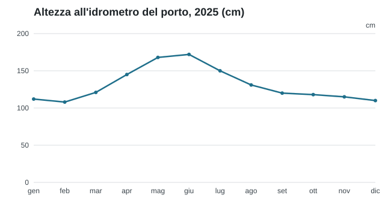

Livello del lago 2025
Le precipitazioni di maggio e giugno hanno portato il lago al livello più alto degli ultimi dieci anni.

Descrizione testuale del grafico (PDF, 40 kB)
Prossimi appuntamenti
| Data | Evento |
|---|---|
| 26.9.2026 | Serata informativa in sala comunale |
| 1.7.2026 | Udienza del sindaco |